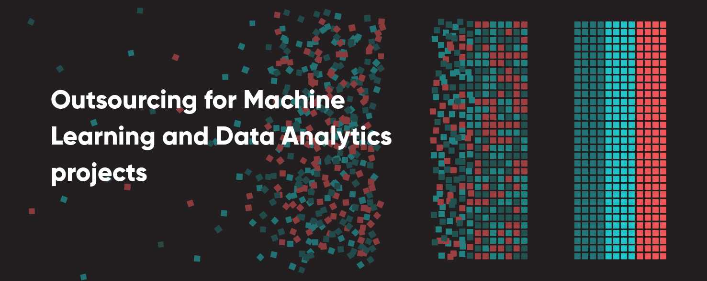
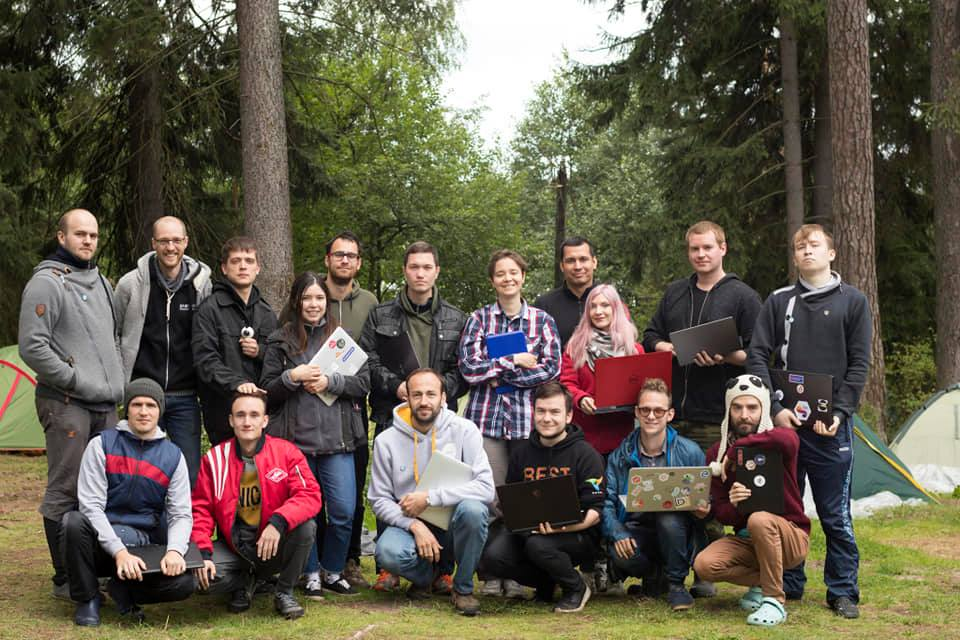
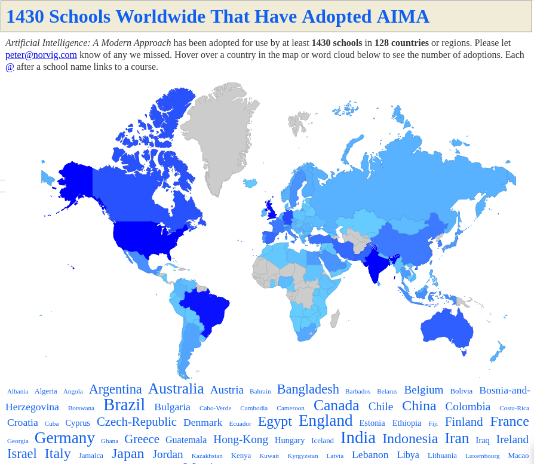
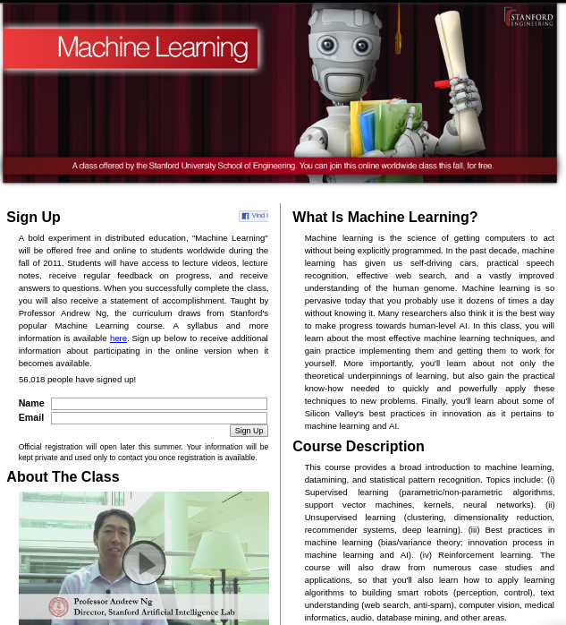
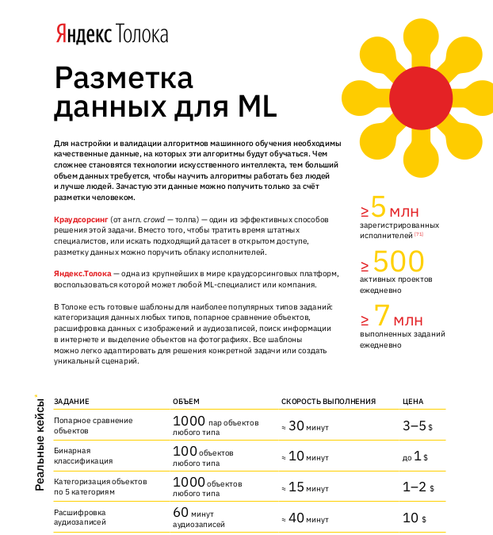
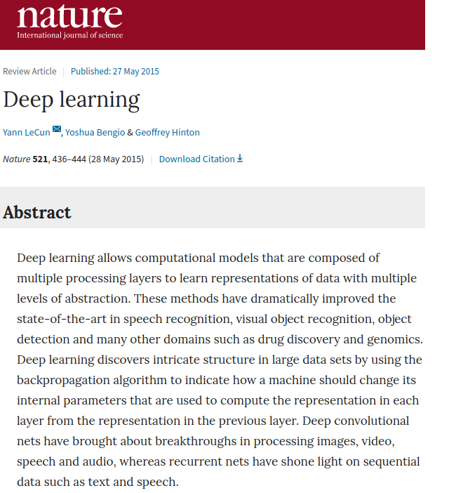
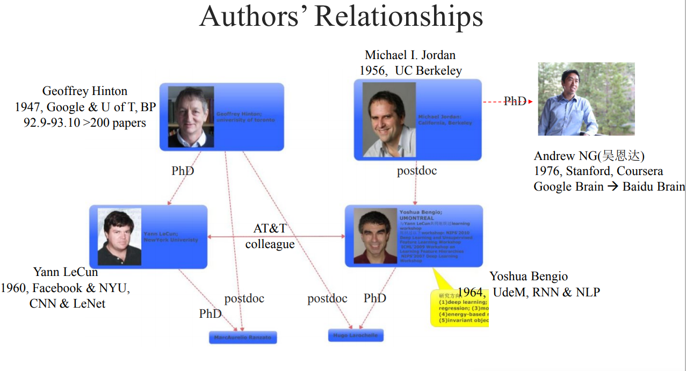
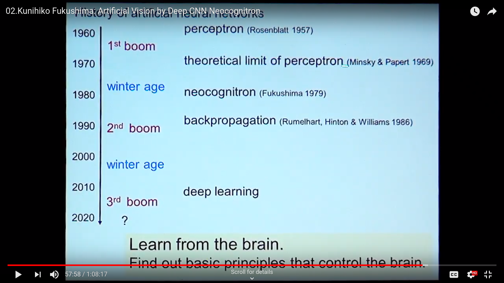

Содержание - Категории (греч. Κατηγορίαι; лат. Categoriae, или Praedicamenta) - Об истолковании (греч. Περὶ ἑρμηνείας; лат. De interpretatione) - Первая аналитика (греч. Ἀναλυτικὰ πρότερα; лат. Analytica priora) - Вторая аналитика (греч. Ἀναλυτικὰ ὕστερα; лат. Analytica posteriora) - Топика (греч. Τοπικά; лат. Topica) - Софистические опровержения (греч. Περὶ τῶν σοφιστικῶν ἐλέγχων, букв. О софистических опровержениях; лат. Sophistici elenchi)
Некоторая история искусственного интеллекта
Обо мне
Белялов Ильдар
Инженер-программист

R&D-инженер (недавнее место работы)

Организатор мастерской Deep Learning
| 2018 | 2019 |
|---|---|
|  |
Научный руководитель

Контакты
Обращайтесь! |
О курсе
Провожу курс первый раз
Материалы сырые — будут ошибки
Вопросы — это прекрасно!
Если не поняли, то проблема в лекторе
Шлите вопрос — обязательно разберем в процессе
«Повторение — мать учения»
Вещь, повторенная дважды запоминается лучше. Вещь, повторенная дважды запоминается лучше.
«Repetitio est mater studiorum»
Докомпьютерная эра
9—8 вв. до н. э., Илиада
Гомер - VIII век до н. э.
древнегреческая мифология
Гефест, бог огня и кузнец
создал из металла помощников для кузницы
где-то тогда же, Талос
бронзовый витязь, данный Зевсом Европе для охраны острова Крит
три раза в день он обегал весь остров

протяжённость береговой линии — 1066 километром
5 век до н.э., "Органон"
(др.-греч. Ὄργανον — инструмент, метод)
Аристотель (384 год до н. э. - 322 год до н. э.)
Силлогистическая логика — первая формальная система дедуктивной логики
Дедукция и индукция
Деду́кция (лат. deductio — выведение, также дедуктивное умозаключение, силлогизм) — метод мышления, следствием которого является логический вывод, в котором частное заключение выводится из общего.
Инду́кция (лат. inductio — наведение, от лат. inducere — влечь за собой, установить) — процесс логического вывода на основе перехода от частного положения к общему. Индуктивное умозаключение связывает частные предпосылки с заключением не строго через законы логики, а скорее через некоторые фактические, психологические или математические представления
Дедукция и индукция
Пример дедукции:
Все люди смертны.
Сократ — человек.
Следовательно, Сократ смертен.

10 век, Терафим Сильвестра II
|
|

13 век, круги Луллия
|
|

|
|

1620, "Новый органон"
 |
|
Бэкон планировал изложить свою основную философскую идею — преобразование наук с целью подчинить природу могуществу человека — в громадном сочинении под заглавием «Великое возрождение наук» (Instauratio Magna), которое должно было состоять из шести частей. Средством для достижения преобразования наук предлагались наблюдение и опыт, то есть индуктивный метод.
1637, "Рассуждение о методе, чтобы хорошо направлять свой разум и отыскивать истину в науках"
|
|

1690, Опыт о человеческом разумении
Джон Локк (1632-1704)
Tabula rasa (чистая доска)
Предположим, что ум есть, так сказать, белая бумага без всяких знаков и идей. Но каким же образом он получает их? Откуда он приобретает тот [их] обширный запас, который деятельное и беспредельное человеческое воображение нарисовало с почти бесконечным разнообразием? Откуда получает он весь материал рассуждения и знания? На это я отвечаю одним словом: из опыта
1781, Критика чистого разума
|
|

1796, механический турок
Первый шахматный автомат сконструирован Вольфгангом фон Кемпеленом и продемонстрирован в Вене в 1769 году. Он был в виде «турка» - восковой фигуры человека в натуральную величину, одетого в турецкий наряд, сидящего за шахматной доской, которая стояла на деревянном ящике (размером 1,2×0,6×0,9 м). В ящике были дверцы, которые раскрывались и публике демонстрировался сложный механизм с различными узлами и деталями. Потом дверцы закрывались, механизм заводился ключом и начиналась игра, которую вёл сильный шахматист, который сидел в ящике и был скрыт системой зеркал и перегородок
в 1834 году Муре раскрыл секрет автомата, опубликовав о нём статью в парижском журнале «Магазин питтореск»
1836 — в Америке писатель Эдгар По опубликовал большую статью под заглавием «Игрок в шахматы Мельзеля»
В 1850 году в Лондоне вышел сборник с описанием 50 партий, сыгранных за автомат французским шахматистом Ж. Муре.

1818, Чудовище Франкенштейна
Мэри Шелли (1797-1851)
Франкенштейн, или Современный Прометей
"В романе Виктор Франкенштейн хочет создать живое существо из неживой материи."
1854, Laws of Thought
Джордж Буль
Boole systematically presented logic as a system of formal rules which turned out to be a major milestone in the reshaping of logic as a formal science. Quickly after, formal logic developed, and today it is considered a native branch of both philosophy and mathematics, with abundant applications to computer science
1910-1913, Principia Mathematica

Рассел и Уайтхед
2000 стр
"стремились показать, что вся математика сводится к логике с помощью набора аксиом и нескольких основных понятий"
1930, Теорема Гёделя о неполноте вторая теорема Гёделя
Курт Гедель, 1906-1978, австрийский логик, математик и философ математики
две теоремы математической логики о принципиальных ограничениях формальной арифметики и, как следствие, всякой формальной системы, в которой можно определить основные арифметические понятия: натуральные числа, 0, 1, сложение и умножение.
показывает слабости формальных систем
Зарождение
1943, A Logical Calculus of Ideas Immanent in Nervous Activity
Мак-Каллок (нейрофизиолог), Питтс (математик)
"Логическое исчисление идей, относящихся к нервной активности"
on how neurons might work.
modeled a simple neural network using electrical circuits.
The paper had only three references, and all of them are classical works in logic: Carnap’s Logical Syntax of Language [6], Russell’s and Whitehead’s Principa Mathematica [7] and the Hilbert and Ackermann Grundüge der Theoretischen Logik.
The paper itself approached the problem of neural networks as a logical one, proceeding from definitions, over lemmas to theorems.
Питтс в 12 лет прочел "Принципы математики" и написал Расселу
Мак-Каллок работал с Винером
1948, Cybernetics: Or Control and Communication in the Animal and the Machine
It is the first public usage of the term "cybernetics" to refer to self-regulating mechanisms.
The book laid the theoretical foundation for servomechanisms (whether electrical, mechanical or hydraulic), automatic navigation, analog computing, artificial intelligence, neuroscience, and reliable communications.
Содержание (второго издания)
Newtonian and Bergsonian Time
Groups and Statistical Mechanics
Time Series, Information, and Communication
Feedback and Oscillation
Computing Machines and the Nervous System
Gestalt and Universals
Cybernetics and Psychopathology
Information, Language, and Society
On Learning and Self-Reproducing Machines
Brain Waves and Self-Organising Systems
1949 Hebb Rule
Donald Hebb
The Organization of Behavior
pointed out the fact that neural pathways are strengthened each time they are used, a concept fundamentally essential to the ways in which humans learn. If two nerves fire at the same time, he argued, the connection between them is enhanced.
1949, клуб Ratio
1949 to 1958
small British informal dining club
young psychiatrists, psychologists, physiologists, mathematicians and engineers who met to discuss issues in cybernetics
The initial membership was W. Ross Ashby, Horace Barlow, John Bates, George Dawson, Thomas Gold, W. E. Hick, Victor Little, Donald MacKay, Turner McLardy, P. A. Merton, John Pringle, Harold Shipton, Donald Sholl, Eliot Slater, Albert Uttley, W. Grey Walter and John Hugh Westcott. Alan Turing joined after the first meeting with I. J. Good, Philip Woodward and William Rushton added soon after. Giles Brindley was also a member for a short period.
The club was the most intellectually powerful and influential cybernetics grouping in the UK, and many of its members went on to become extremely prominent scientists.
1950, Тест Тьюринга
Алан Тьюринг
Computing Machinery and Intelligence
"I propose to consider the question 'Can machines think?'"

1950, The Unreasonable Effectiveness of Mathematics in the Natural Sciences
Юджин Вигнер (1902-1995), физик, нобелевский лауреат
важно подчеркнуть, что математическая формулировка результатов наблюдений физика, часто довольно грубых, приводит в неправдоподобно многочисленных случаях к удивительно точному описанию большого класса явлений. Это обстоятельство показывает, что математический язык следует рассматривать как нечто большее, чем просто язык, на котором мы должны говорить; оно показывает, что математика на самом деле является правильным (подходящим) языком…
1951, «бумажная машина Тьюринга»
1954, IBM 704
the first mass-produced computer with floating-point arithmetic hardware
IBM sold 123 type 704 systems between 1955 and 1960

1954, Georgetown–IBM experiment
only six grammar rules
250 lexical items in its vocabulary (of stems and endings)
IBM 701
Cold War
Over 60 Romanized Russian statements from a wide range of political, legal, mathematical, and scientific topics were entered into the machine by a computer operator who knew no Russian, and the resulting English translations appeared on a printer.
| Russian (Romanized) | English translation |
|---|---|
Mi pyeryedayem mislyi posryedstvom ryechyi. | We transmit thoughts by means of speech. |
Vyelyichyina ugla opryedyelyayetsya otnoshyenyiyem dlyini dugi k radyiusu. | Magnitude of angle is determined by the relation of length of arc to radius. |
Myezhdunarodnoye ponyimanyiye yavlyayetsya vazhnim faktorom v ryeshyenyiyi polyityichyeskix voprosov. | International understanding constitutes an important factor in decision of political questions. |
1955, Logic Theorist
RAND Corporation
Аллен Ньюэлл, Герберт Саймон and Cliff Shaw
the first program deliberately engineered to mimic the problem solving skills of a human being
"the first artificial intelligence program"
prove 38 of the first 52 theorems in Principia Mathematica
одно из доказательств было даже более элегантным
1956, Дартмутский семинар
Дартмутской колледж
двухмесячный научный семинар по вопросам искусственного интеллекта
John McCarthy, Marvin Minsky, Julian Bigelow, Donald MacKay, Ray Solomonoff, John Holland, Claude Shannon, Nathanial Rochester, Oliver Selfridge, Allen Newell and Herbert Simon
Мы предлагаем исследование искусственного интеллекта сроком в 2 месяца с участием 10 человек летом 1956 года в Дартмутском колледже, Гановер, Нью-Гемпшир. Исследование основано на предположении, что всякий аспект обучения или любое другое свойство интеллекта может в принципе быть столь точно описано, что машина сможет его симулировать. Мы попытаемся понять, как обучить машины использовать естественные языки, формировать абстракции и концепции, решать задачи, сейчас подвластные только людям, и улучшать самих себя. Мы считаем, что существенное продвижение в одной или более из этих проблем вполне возможно, если специально подобранная группа учёных будет работать над этим в течение лета
1956, Artificial intelligence
Появление термина
1958 LISP
"LISt Processor"
pioneered many ideas in computer science, including tree data structures, automatic storage management, dynamic typing, conditionals, higher-order functions, recursion, the self-hosting compiler, and the read–eval–print loop

1959 General Problem Solver
более мощного инструмента, чем Logical Theorist
программа могла не только доказывать утверждения, но и играть в шахматы и ханойские башни.
Программа раскладывала проблему на более простые составляющие, решение которых возможно достичь.
1972 «Решение проблем человеком», Ньюэлл и Саймон обобщили результаты этих исследований, а также рассказали об исследованиях, объектами которых были люди, решавшие математические и логические головоломки
it could not solve any real-world problems because search was easily lost in the combinatorial explosion.
демонстрировал результаты, которые не могли нейросети
доказательство теорем считалось чуть ли не вершиной интеллекта, в отличии от распознавания образов
1958 Perceptron
Cornell Aeronautical Laboratory
Фрэнк Розенблатт, 1928-1971, американский учёный в области психологии, нейрофизиологии
первоначально в 1957 как программа для IBM 704
первый "нейрокомпьютер"
1962 - книга Principles of Neurodynamic


1959 ADALINE/MADALINE
Bernard Widrow and Marcian Hoff
ADALINE (ADAptive LInear NEuron), MADALINE (Many/Multiple ADALINE)
It is based on the McCulloch–Pitts neuron.
ADALINE was developed to recognize binary patterns so that if it was reading streaming bits from a phone line, it could predict the next bit.
нейрокомпьютер
MADALINE was the first neural network applied to a real world problem, using an adaptive filter that eliminates echoes on phone lines. While the system is as ancient as air traffic control systems, like air traffic control systems, it is still in commercial use.


1959, «Что говорит глаз лягушки мозгу лягушки»
Глаз говорит с мозгом на языке, который уже обладает чертами высокой организации и интерпретации.
1959, Verbal Behavior
Noam Chomsky (1928-)
"The fact that all normal children acquire essentially comparable grammars of great complexity with remarkable rapidity suggests that human beings are somehow specially designed to do this, with data-handling or "hypothesis-formulating" ability of unknown character and complexity."
долой бихевиоризм
когнитивная революция
cognitive science: anthropology, computer science, linguistic, neuroscience, philosophy and psychology.
1959, Neural Basis of Visual Perception
Hubel and Wiesel

1962, Widrow & Hoff developed a learning procedure
examines the value before the weight adjusts it (i.e. 0 or 1) according to the rule: Weight Change = (Pre-Weight line value) * (Error / (Number of Inputs)). It is based on the idea that while one active perceptron may have a big error, one can adjust the weight values to distribute it across the network, or at least to adjacent perceptrons. Applying this rule still results in an error if the line before the weight is 0, although this will eventually correct itself. If the error is conserved so that all of it is distributed to all of the weights than the error is eliminated.
1963, SAIL
Stanford Artificial Intelligence Laboratory
Джон Маккарти сооснователь
The current director is Professor Chris Manning
1965-, Dendral
"Dendritic Algorithm"
Stanford
Edward Feigenbaum, Bruce G. Buchanan, Joshua Lederberg, and Carl Djerassi, along with a team of highly creative research associates and students
Its primary aim was to study hypothesis formation and discovery in science.
идентификации органических соединений с помощью анализа масс-спектрограмм.
LISP
многие производные системы, including MYCIN, MOLGEN, PROSPECTOR, XCON, and STEAMER.
написано более 20 научных работ по результатам работы системы DENDRAL с реальными задачами.
сейчас существуют много программ для той же задачи, но их не называют ИИ
1966, Eliza
|
|

1966, ALPAC report
Automatic Language Processing Advisory Committee
established by the United States government in order to evaluate the progress in computational linguistics in general and machine translation in particular
gained notoriety for being very skeptical of research done in machine translation so far, and emphasizing the need for basic research in computational linguistics
this eventually caused the U.S. government to reduce its funding of the topic dramatically
1966, failure of machine translation
‘the spirit was willing but theflesh was weak’
‘the vodka was good, but the meat was rotten’.
1969, Perceptrons
Perceptrons: an introduction to computational geometry
Marvin Minsky and Seymour Papert
XOR-problem
1969, IJCAI
International Joint Conference on Artificial Intelligence (IJCAI)
1973, Lighthill report
James Lighthill (1924-1988), British applied mathematician
Artificial Intelligence: A General Survey
British Science Research Council
закрыл все, кроме 3 департаментов: Edinburgh, Sussex and Essex
1974, Чемпионат мира по шахматам среди компьютерных программ
первый чемпионат
«Каисса» выиграла все четыре партии и стала первым чемпионом мира среди шахматных программ, обогнав программы «Chess 4», «Chaos» и «Ribbit», набравших по 3 очка[8]. В первенстве приняли участие 13 машин из 8 стран мира, передававшие свои ходы в зал проведения первенства оператору по телефону
создана 1971, Институт проблем управления АН СССР, Георгием Адельсон-Вельским, Владимиром Арлазаровым, и Михаилом Донским
Успех «Каиссы» может быть объяснён многими заложенными в неё новшествами. В частности, программа имела дебютную книгу на 10000 ходов, использовала новый алгоритм отсечения позиций и впервые использовала побитовое представление доски. Также она могла производить анализ во время хода соперника, использовала эвристику нулевого хода и сложные алгоритмы для управления временем. В дальнейшем все эти новшества стали широко использоваться в шахматных программах. Программа была написана на ассемблере, работала на британской ЭВМ ICL System 4/70 (64-разрядный процессор, память — 24000 байт, быстродействие — 900 тыс. инструкций в секунду) и анализировала 200 позиций в секунду.
1974, backpropagation
Paul Werbos, an economist by degree, discovered backpropagation, a way to propagate the error back through the hidden (middle) layer
1974-1980 AI Winter
Despite the later success of the neural network, traditional von Neumann architecture took over the computing scene, and neural research was left behind. Ironically, John von Neumann himself suggested the imitation of neural functions by using telegraph relays or vacuum tubes.
— quote
In the same time period, a paper was written that suggested there could not be an extension from the single layered neural network to a multiple layered neural network. In addition, many people in the field were using a learning function that was fundamentally flawed because it was not differentiable across the entire line. As a result, research and funding went drastically down.
— quote
A quiet darkness fell across the neural networks, lasting many years. One might wonder what was happening in the USSR at this time, and the short answer is that cybernetics, as neural networks were still called in the USSR in this period, was considered a bourgeois pseudoscience.
— From logic
1972, PROLOG
French scientist Alain Colmerauer invents the logic programming language
1972, Kohonen and Anderson developed a similar network independently of one another
"They both used matrix mathematics to describe their ideas but did not realize that what they were doing was creating an array of analog ADALINE circuits. The neurons are supposed to activate a set of outputs instead of just one."
1975 The first multilayered network
unsupervised network
начало 70-х MYCIN
Stanford
Lisp
разрабатывалась 5-6 лет
относительно простой алгоритм вывода (backward reasoning)
около 600 правил
программа задавала пользователю (врачу) длинный ряд простых «да/нет» или текстовых вопросов
система предоставляла список подозреваемых бактерий, отсортированный по вероятности, указывала доверительный интервал для вероятностей диагнозов и их обоснование
Research conducted at the Stanford Medical School found MYCIN received an acceptability rating of 65% on treatment plan from a panel of eight independent specialists, which was comparable to the 42.5% to 62.5% rating of five faculty members.
Проблемы
этические вопросы
MYCIN была автономной системой, требующей от пользователя набора всей необходимой информации. Программа запускалась на сервере с разделением времени, доступному по раннему Интернету (ARPANet)
сеанс работы с MYCIN мог легко занять 30 минут и более
"knowledge acquisition bottleneck" — трудно "извлечь" знания из опыта людей-экспертов для формирования базы правил
1979 Neocognitron
Kunihiko Fukushima
multilayered artificial neural network
inspired by the model proposed by Hubel & Wiesel
The neocognitron consists of multiple types of cells, the most important of which are called S-cells and C-cells.
1979, AAAI
American Association for Artificial Intelligence
теперь Association for the Advancement of Artificial Intelligence
1982, Hopfield Network
a form of recurrent artificial neural network
Hopfield nets serve as content-addressable ("associative") memory systems with binary threshold nodes.
1982, 5 поколения комьпютеров
a joint US-Japan conference on Cooperative/Competitive Neural Networks.
Japan announced a new Fifth Generation effort on neural networks, and US papers generated worry that the US could be left behind in the field.
As a result, there was more funding and thus more research in the field.
1982, EurAI
European Association for Artificial Intelligence
(formerly ECCAI)
1984- AI Winter 2
Research that concentrates on developing neural networks is relatively slow. Due to the limitations of processors, neural networks take weeks to learn. Some companies are trying to create what is called a "silicon compiler" to generate a specific type of integrated circuit that is optimized for the application of neural networks. Digital, analog, and optical chips are the different types of chips being developed. One might immediately discount analog signals as a thing of the past. However neurons in the brain actually work more like analog signals than digital signals. While digital signals have two distinct states (1 or 0, on or off), analog signals vary between minimum and maximum values. It may be awhile, though, before optical chips can be used in commercial applications.
1986 Back-propagation
In 1986, with multiple layered neural networks in the news, the problem was how to extend the Widrow-Hoff rule to multiple layers. Three independent groups of researchers, one of which included David Rumelhart, a former member of Stanford’s psychology department, came up with similar ideas which are now called back propagation networks because it distributes pattern recognition errors throughout the network. Hybrid networks used just two layers, these back-propagation networks use many. The result is that back-propagation networks are "slow learners," needing possibly thousands of iterations to learn.
— quote
1986, NeurIPS
Conference on Neural Information Processing Systems
раньше звался NIPS
NeurIPS was designed as a complementary open interdisciplinary meeting for researchers exploring biological and artificial Neural Networks.
Развитие
1985, CLIPS
C Language Integrated Production System
The original name of the project was NASA’s AI Language (NAIL)
CLIPS incorporates a complete object-oriented language for writing expert systems.
COOL combines the programming paradigms of procedural, object oriented and logical (theorem proving) languages.
1986, RNN
Michael I. Jordan
Attractor dynamics and parallelism in a connectionist sequential machine
1987, collapse of the LISP machine market
cheaper desktop PCs soon could run Lisp programs even faster than Lisp machines, with no use of special purpose hardware.
1989 LeNet
Lecun Net
Ян Лекун
60 тысяч параметров


1990, Премия Лёбнера
1990, SRNN
the simple recurrent neural network (Elman network)
Elman Jeff (1948-2018)
"Finding structure in time"
The paper was ground-breaking for many cognitive scientists and psycholinguists, since it was the first to completely break away from a prior commitment to specific linguistic units (e.g. phonemes or words), and to explore the vision that these units might be emergent consequences of a learning process operating over the latent structure in the speech stream.
1991, Terminator 1
CPU is a neural net processor
1992, РАИИ
Российская ассоциация искусственного интеллекта
К настоящему времени в ассоциацию входит 236 человек, из них 48 докторов и 69 кандидатов наук из 45 регионов России. Ассоциация провела шесть школ по проблемам искусственного интеллекта, участвовала в организации 14 симпозиумов, в том числе провела два международных симпозиума "Восток-Запад " (Москва 1993г., 1995г.), три международных симпозиума по технологии программирования (Переславль-Залесский 1994г., Болгария 1996г.), два международных семинара по прикладной семиотике (Будапешт 1996г., Смоленице 1997г.). Ассоциация участвовала в организации и проведении четырех международных конференций, в частности, Европейских конференций по искусственному интеллекту (Вена 1994г., Будапешт 1996г., Берлин 2000г.).
"В России Ассоциацией проведено тринадцать национальных конференций по искусственному интеллекту (Пеpеславль-Залесский 1988г., Минск 1990г., Тверь 1992г., Рыбинск 1994г., Казань 1996г., Пущино 1998г., Пеpеславль-Залесский 2000г., Коломна 2002г., Тверь 2004г., Обнинск 2006г., Дубна 2008г., Тверь 2010г., Белгород 2012г.)."
1992, ECAI
European Conference on Artificial Intelligence
1993, RoboCup
Worldwide RoboCup initiative to build soccer-playing autonomous robots
1995, SVM
This leads us to the 1990s and beyond. The early 1990s were largely uneventful, as the general support of the AI community shifted towards support vector machines (SVM). These machine learning algorithms are mathematically well founded, as opposed to neural networks which were interesting from a philosophical standpoint, and mainly developed by psychologists and cognitive scientists. To the larger AI community, which still had a lot of the GOFAI drive for mathematical precision, they were uninteresting, and SVMs seemed to produce better results as well
1995, AIMA
Artificial Intelligence: A Modern Approach
Stuart J. Russell и Peter Norvig.
учебник

1997, Video Rewrite
1997, Deep Blue
|
|

Вместо того чтобы играть в шахматы как человек — демонстрируя человеческую интуицию и нестандартное творческое мышление, он играет в шахматы как машина: оценивает до 200 млн возможных ходов в секунду и побеждает благодаря грубой вычислительной силе.
Гарри Каспаров
— https://www.alpinabook.ru/blog/garri-kasparov/
— https://www.alpinabook.ru/blog/garri-kasparov/
1997 LSTM
Sepp Hochreiter, Jürgen Schmidhuber.
популярная архитектура

1999, GeForce 256
первый GeForce
"the world’s first 'GPU', or Graphics Processing Unit"
"a single-chip processor with integrated transform, lighting, triangle setup/clipping, and rendering engines that is capable of processing a minimum of 10 million polygons per second."

2001, Amazon Mechanical Turk
2001, Neural language models

2001, MIT OpenCourseWare
initiative of the Massachusetts Institute of Technology (MIT) to publish all of the educational materials from its undergraduate- and graduate-level courses online, freely and openly available to anyone, anywhere.
2004, DARPA Grand Challenge
Defense Advanced Research Projects Agency
ни одна машина не доехала
2005, Stanley
Stanley is an autonomous car created by Stanford University’s Stanford Racing Team in cooperation with the Volkswagen Electronics Research Laboratory (ERL). It won the 2005 DARPA Grand Challenge,[1] earning the Stanford Racing Team the 2 million dollar prize.

2005, ImageNet Challenge
The ImageNet project is a large visual database designed for use in visual object recognition software research.
ImageNet Large Scale Visual Recognition Challenge (ILSVRC)
2005, Future of Humanity Institute
Future of Humanity Institute (FHI)
University of Oxford
Nick Bostrom is director
Purpose: "Research big-picture questions about humanity and its prospects"
2006 DBN
Deep Belief Network
Hinton, Osindero, Teh
significantly better results on the MNIST dataset
deep learning?
Deep Learning
2007, НТИ
Национа́льная технологи́ческая инициати́ва
государственная программа мер по поддержке развития в России перспективных отраслей, которые в течение следующих 20 лет могут стать основой мировой экономики
Список центров компетенций НТИ
| Сквозная технология | Победитель конкурсного отбора | Наименование Центра |
|---|---|---|
Искусственный интеллект | МФТИ | Центр Национальной технологической инициативы по направлению «Искусственный интеллект» |
Технологии хранения и анализа больших данных | МГУ имени М.В. Ломоносова | Центр технологий хранения и анализа больших данных |
Технологии машинного обучения и когнитивные технологии | ИТМО | Национальный центр когнитивных разработок |
2007, Theano
Montreal Institute for Learning Algorithms
2008, Multi-task learning для нейросетей
A unified architecture for natural language processing: Deep neural networks with multitask learning
the look-up tables (or word embedding matrices) are shared between two models trained on different tasks
It won the test-of-time award at ICML 2018
Multi-task learning is now used across a wide range of NLP tasks and leveraging existing or "artificial" tasks has become a useful tool in the NLP repertoire.

2009, AIMA 3rd edition
"the most popular artificial intelligence textbook in the world"
7 вузов России: Altai State Univ., Kazan State Univ., Lobachevsky State Univ. of Nizhni Novgorod , Moscow State Industrial Univ. , Moscow State Univ., Statistics and Informatics, St. Petersburg State Univ. of Info. Tech., V.A. Steklov Inst. of Math, Russian Academy of Sciences, St. Petersburg
- Part I: Artificial Intelligence - Sets the stage for the following sections by viewing AI systems as intelligent agents that can decide what actions to take and when to take them.
- Part II: Problem-solving - Focuses on methods for deciding what action to take when needing to think several steps ahead such as playing a game of chess.
- Part III: Knowledge, reasoning, and planning - Discusses ways to represent knowledge about the intelligent agents' environment and how to reason logically with that knowledge.
- Part IV: Uncertain knowledge and reasoning - This section is analogous to Parts III, but deals with reasoning and decision-making in the presence of uncertainty in the environment.
- Part V: Learning - Describes ways for generating knowledge required by the decision-making components and introduces a new component: the artificial neural network
- Part VI: Communicating, perceiving, and acting - Concentrates on ways an intelligent agent can perceive its environment whether by touch or vision.
- Part VII: Conclusions - Considers the past and future of AI by discussing what AI really is and why it has succeeded to some degree. Also discusses the views of those philosophers who believe that AI can never succeed.
2009, The Unreasonable Effectiveness of Data
Fernando Pereira, Peter Norvig, Alon Halevy
Google
Our point was that if there are hundreds of millions of people generating data of some kind (like html tables), it is probably a better strategy to use that data, even if it is noisy, rather than try to put together a coalition of a few researchers who will generate perfect non-noisy data.
2009, Google Self-driving car
First Google self-driving car drives on the California freeway.
Sebastian Thrun
"The automated cars use video cameras, radar sensors, and a laser range finder to locate everything around them (these are mounted on the roof). And, of course, they use Google’s own maps"

2011, Google Brain
deep learning artificial intelligence research team at Google.
part-time research collaboration between Google Fellow Jeff Dean, Google Researcher Greg Corrado, and Stanford University professor Andrew Ng
2013 наняли Хинтона
2011, ml-class.com
Andrew Ng, Daphne Koller
100,000 students
из него появились Coursera

2011, ai-class.com
Introduction to Artificial Intelligence
Stanford
Peter Norvig and Sebastian Thrun
160,000 students signed up, from more than 190 countries, with a median age of around 30
из него появилось Udacity

2011, Watson
IBM’s “Watson” beats two human champions on the television game show “Jeopardy!”

2012 AlexNet
Alex Krizhevsky, Ilya Sutskever, Geoffrey Hinton
GPU
7 слоев
60 миллионов

2012, AlexNet ImageNet

2013, Word2Vec
Томаш Миколов (1982-), Google
дистрибутивная семантика
быстрый алгоритм
удачный выбор дефолтный гиперпараметров
"семантическая арифметика"

2013, DNNresearch was acquired by Google
2012
DNNresearch, a young startup founded by professor Geoffrey Hinton and two of his grad students, Alex Krizhevsky and Ilya Sutskever.
2013, AI2
Allen Institute for Artificial Intelligence
founded by late Microsoft co-founder Paul Allen.
проекты:
Semantic Scholar
AllenNLP
MOSAIC: The Mosaic project is focused on defining and building common sense knowledge and reasoning for AI systems.
2013, FAIR
Facebook AI Research
Yann Le Cun
2014, Nvidia Jetson
Nvidia Jetson TK1

2014, Future of Humanity Institute
> Research big-picture questions about humanity and its prospects
директор Nick Bostrom
2014, GAN
Generative Adversarial Networks
Goodfellow, Ian; Pouget-Abadie, Jean; Mirza, Mehdi; Xu, Bing; Warde-Farley, David; Ozair, Sherjil; Courville, Aaron; Bengio, Yoshua

2014, Яндекс.Толока́

2015, The Unreasonable Effectiveness of Recurrent Neural Networks
Andrey Karpathy
char-based
генерация Шекспира, кода и т.п.
интерпретация

2015, ResNet
Residual Neural Network (ResNet)
ILSVRC 2015
Kaiming He и компания
“skip connections” and features heavy batch normalization.
101-слой

2015, Attention
Bahdanau

2015, Deep Dream
Google
Inceptionism


2015, Keras
François Chollet
Python
2017 часть Tensorflow
2015, заметный рост NIPS
|


2015, Neural Style Transfer
Gatys et al
A Neural Algorithm of Artistic Style
2015, Tensorflow
Google Brain Team
2015, OpenAI
основатели Elon Musk и Sam Altman
1 млрд $
в 2019 году Майкрософт еще 1 млрд $
2015, Deep learning
Йошуа Бенджио, Джеффри Хинтон и Ян Лекун
статья в Nature

Backpropaganda
What idiot called it "deep learning hype" and not "backpropaganda"
— Naomi Saphra (@nsaphra) April 14, 2016

Deep Learning Mafia


2016 PyTorch
Facebook
на базе Torch
2016, OpenAI Gym
2016, Deep Learning Book
|
|

2016, TPU
tensor processing unit
AI accelerator application-specific integrated circuit
Google
2017 версия 2
2018 версия 3

2016, AlphaGo
The Go program AlphaGo by Google DeepMind beats the European champion 5:0 in January and Korean Lee Sedol, one of the world’s best Go players, 4:1 in March. Deep learning techniques applied to pattern recognition, as well as reinforcement learning and Monte Carlo tree search lead to this success.
— quote
2016, Эмпиризм в deep learning?
By working strictly on methods that you can fully analyze theoretically, you confine yourself to using excessively naive methods. Physicists don’t work like that. They don’t get to choose the complexity of the systems they study: the physical world is what it is. To them, complex systems are more interesting. For example, a lot of interesting mathematics and theoretical physics methods were developed in the context of studying spin glasses and other “disordered” systems. Physicists couldn’t simply choose to not study these systems because they were too complicated.
I do think that there is a need for better theoretical understanding of deep learning.
How important is the interpretability of your taxi driver?
Contrary to what some people think, I believe that we have already a good basic understanding of fundamentals about why deep learning works, e.g., But of course, much more theory is needed! Very often we are in a situation where we do not understand the results of an experiment, for example.
2016, Partnership on AI
Partnership on Artificial Intelligence to Benefit People and Society
индустриальный консорциум
"establishing best practices for artificial intelligence systems and to educate the public about AI"
Amazon, Facebook, Google, DeepMind, Microsoft, and IBM
Apple присоединились в 2017
2017, Revisiting the Unreasonable Effectiveness of Data
|
|


2017, ONNX
Open Neural Network Exchange
Facebook и Microsoft
затем IBM, Huawei, Intel, AMD, ARM and Qualcomm
2017, iPavlov
Согласно паспорту проекта, с 2017 по 2020 год iPavlov должен получить 505,6 млн рублей, в том числе 350,3 млн в качестве субсидий из федерального бюджета по линии Национальной технологической инициативы и 155,3 млн от частных инвесторов.
«МФТИ — один из наших ключевых партнёров в сфере образования и создания инновационных технологий, — отметил Герман Греф. — Результатом проекта iPavlov станут новые бизнес-приложения, которые будут интегрированы в работу Сбербанка и выведут обслуживание наших клиентов на новый уровень. Кроме того, в ходе проекта Сбербанк и МФТИ проведут масштабные междисциплинарные исследования, которые помогут создать экосистему мирового уровня в области машинного обучения и искусственного интеллекта».
2017, Synthesizing Obama
The Face2Face program, published in 2016, modifies video footage of a person’s face to depict them mimicking the facial expressions of another person in real time
2018, Edge TPU

2018, Pretrained Language Models

2019, OpenAI Five
Dota
OpenAI Five defeated OG, the reigning world champions of the game at the time, 2:0 in a live exhibition match in San Francisco
OpenAI only learned a heavily simplified version of Dota, including only 17 out of over 100 heroes and excluding certain items as well as game mechanics.
2019, GPT-2
neural fake news
десятки тысяч $
2019, Премия Тьюринга
Йошуа Бенджио, Джеффри Хинтон и Ян Лекун
2019, Национальной стратегии развития технологий ИИ
По словам главы государства, уже через пять лет мировой рынок продуктов с использованием искусственного интеллекта вырастет почти в 17 раз и составит порядка 1,5 трлн рублей.
2019, Human Compatible: Artificial Intelligence and the Problem of Control

2019, "Superhuman AI for multiplayer poker"
Plubiris
Facebook, CMU
Pluribus is the first AI bot capable of beating human experts in six-player no-limit Hold’em, the most widely played poker format in the world. This is the first time an AI bot has beaten top human players in a complex game with more than two players or two teams.
We tested Pluribus against professional poker players, including two winners of the World Series of Poker Main Event. Pluribus won decisively.
When pitted against five elite professional poker players, or with five copies of Pluribus playing against one professional, the computer performed significantly better than humans over the course of 10,000 hands of poker.

Timeline 1

SOTA
Курс
Домашки
эссе
несколько домашних заданий
проект на 1-2 человек
рассказ о пейпере
защита
Темы
логистическая регрессия
pytorch
основы нейросетей
компьютерное зрение
компьютерная лингвистика
работа со звуком
генеративные модели
multi-task learning
high-level задачи